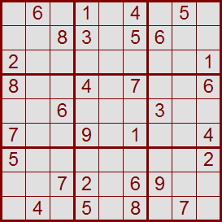
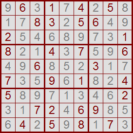

In many newspapers we may find some puzzles to solve, one of those is Su Doku. Given a grid 9×9 with some of entries filled, the objective is to fill in the grid so that every row, every column, and every 3×3 box contains the digits 1 through 9.


source: http://www.sudoku.com
Input contains several test cases separated by a blank line. Each of them contains an integer n such that 1≤n≤3 and a grid n²×n² with some of the entries filled with digits from 1 to n² (an entrie not filled will have 0). In this case, the objective is to fill in the grid so that every row, every column, and every n×n box contains the digits 1 through n².
A solution for the problem. If exists more than one, you should give the lower one assuming a lexicographic order. If there is no solution, you should print 'NO SOLUTION'. For lexicographic comparison you should consider lines in first place. Print a blank line between test cases.
3 0 6 0 1 0 4 0 5 0 0 0 8 3 0 5 6 0 0 2 0 0 0 0 0 0 0 1 8 0 0 4 0 7 0 0 6 0 0 6 0 0 0 3 0 0 7 0 0 9 0 1 0 0 4 5 0 0 0 0 0 0 0 2 0 0 7 2 0 6 9 0 0 0 4 0 5 0 8 0 7 0
9 6 3 1 7 4 2 5 8 1 7 8 3 2 5 6 4 9 2 5 4 6 8 9 7 3 1 8 2 1 4 3 7 5 9 6 4 9 6 8 5 2 3 1 7 7 3 5 9 6 1 8 2 4 5 8 9 7 1 3 4 6 2 3 1 7 2 4 6 9 8 5 6 4 2 5 9 8 1 7 3